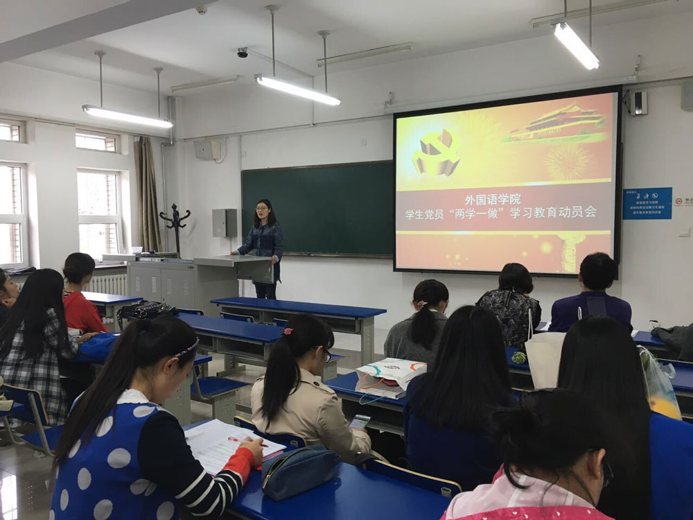

学院 · 动态
外国语学院学生党总支召开学生党员“两学一做”学习教育动员会
5月5日，外国语学院学生党总支在大成教学馆102召开学生党员“两学一做”学习教育动员会。学院党委副书记赵丽娜、学生办主任姜铭奎、党委组织员鄂立华老师及全体学生党员参加会议。
学院党委副书记赵丽娜老师对“两学一做”进行了详细深入的解读，并提出希望广大党员同学要重温党史党章，认真学习系列讲话，争做合格党员；严格律己，以身作则，充分发扬党员先锋模范作用；勤奋学习，努力提高自身素养和能力。

学生党员谷岳弈代表全体学生党员发言，倡仪学生党员首先要内化于心、外化于行，深入贯彻“两学一做”； 其次应坚定信念，淬炼党性，发挥模范带头作用;还应该胼手胝足，砥砺前行，提高个人素质修养。
大会最后，鄂立华老师详细为大家介绍、布置了学院学生党员“两学一做”具体实施方案及活动要求。希望大家在今后要加强学习，进一步提高党性意识、党性修养，增强政治意识、大局意识、责任意识和看齐意识。